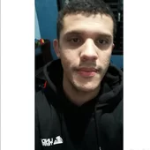

Caio Augusto Carvalho dos Santos
Contato:
Objetivo:
Busco uma oportunidade na área visando o ganho de experiência profissional
e aprimoramento de conhecimentos acadêmicos.
Informações acadêmicas
- Ensino médio completo – Hélio Del Cistia (2013).
-
Cursando segundo semestre em superior tecnológico de análise e
desenvolvimento de sistemas (FACENS – 2022-2025).
Experiência profissional
-
Auxiliar de almoxarifado (Junho de 2015 – Dezembro 2016 - Flex)
Abastecimento das linhas de produção de Ink Jet e Laser Jet
-
Inspetor de qualidade I (Dezembro 2016 – Novembro 2020) Inspeção de
qualidade de recebimento de materiais de todos os clientes Flex.
-
Inspetor de qualidade II (Novembro de 2020 – até o momento) Suporte de
engenharia de qualidade de materiais em atividades como: Screenings,
processos de RMA, inspeção de materiais e atendendo chamados das linhas
de produção.
Qualificações e Atividades Complementares
- Inglês Avançado (escrita, leitura e conversação).
- Conhecimento intermediário no sistema Baan.
- Conhecimentos e noções basicos em lógica de programação e linguagem Java.
- Github com algumas atividades acadêmicas: https://github.com/augustocaio95